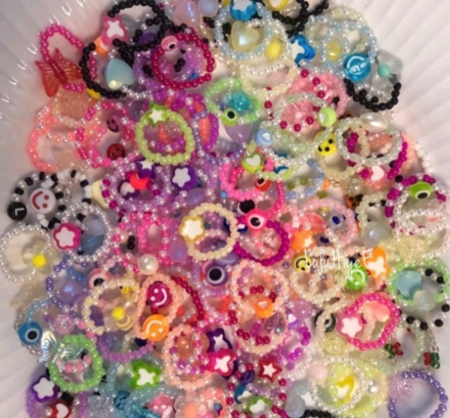
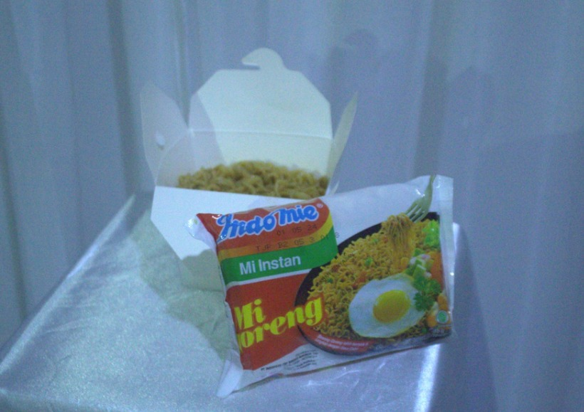
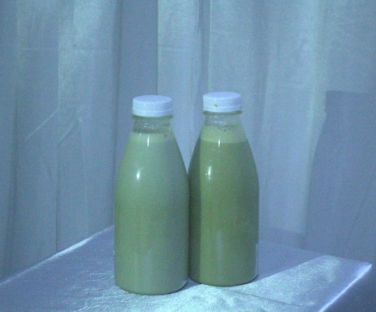
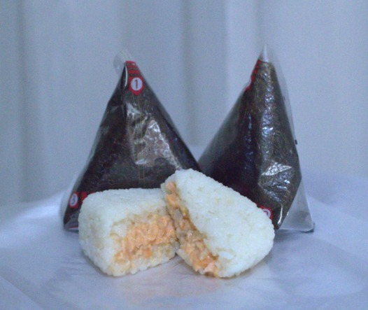
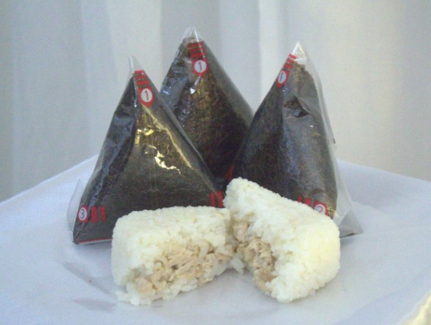

Perencanaan Produk
|
Pada awalnya, kami ingin menjual perhiasan yang dapat digunakan dengan nyaman oleh gadis remaja dan tidak memerlukan ukuran khusus. Kami ingin menjual perhiasan yang dapat digunakan semua orang dan merasa cantik pada saat menggunakan perhiasan kami. Jadi, dalam hal ini kami memutuskan dan sepakat untuk menjual cincin manik yang dapat dengan mudah disesuaikan dengan ukuran orang karena talinya terbuat dari tali yang elastis. Kami juga ingin perhiasan yang kami jual terlihat trendi sehingga gadis remaja akan menyukainya karena semua pembeli yang membeli dari stand kami adalah gadis remaja SMP Santa Ursula Jakarta.
Untuk pengemasan produk tersebut, kami menggunakan kantong plastik kecil seukuran gelang yang kami jua. Tentu kami membeli pengemasan yang cukup terjangkau dan memiliki bahan yang bagus. Lalu, kami tempelkan stiker yang menunjukkan logo kami sebagai simbol produk dari stand kita.

Pada awalnya, kami ingin menjual perhiasan yang dapat digunakan dengan nyaman oleh gadis remaja dan juga seperti perhiasaan yang aesthetic dan trendy. Kami ingin menjual perhiasan yang dapat digunakan oleh orang-orang yang ingin memiliki perhiasan yang matching dengan teman maupun sahabatnya. Dan kami ingin mereka merasa cantik pada saat mereka menggunakan perhiasan kami. Jadi, dalam hal ini kami memutuskan dan sepakat untuk menjual Matching Bracelet yaitu gelang yang terbuat dari manik-manik berukuran besar dan berbagai macam charms. Alasan lain mengapa kami sepakat untuk menjadikan Matching Bracelet sebagai produk kami adalah karena kebanyakan gadis jaman sekarang mencari aksesoris yang terjangkau dan trendi agar sesuai standar jaman sekarang maupun hal lain. Saat kami mencari tempat untuk membeli gelang yang cocok, kami juga harus menemukan toko yang terjangkau agar kami dapat memperoleh keuntungan darinya dan juga bukan toko sembarangan yang mungkin bisa menipu kami. Kami juga mencari toko yang dapat dipercaya dan juga diandalkan karena kami tidak akan membeli produknya secara langsung, melainkan kami ingin membeli beberapa untuk mencoba dan melihat apakah produk yang akan kami jual kembali cukup layak. Kita juga bisa berhemat saat membeli produk cincin manik dan gelang manik karena semua ditoko yang sama dengan produk Matching Bracelets. Untuk pengemasan produk tersebut, kami menggunakan kantong plastik kecil seukuran gelangnya yang dapat ditutup dan dibuka dengan gampang. Tentu kami membeli pengemasan yang cukup terjangkau dan memiliki bahan yang bagus. Lalu, kami tempelkan stiker yang menunjukkan logo kami sebagai simbol produk dari stand kita.
Pada awalnya, kami ingin menjual perhiasan yang dapat digunakan dengan nyaman oleh gadis remaja. Kami ingin menjual perhiasan yang dapat digunakan semua orang dan merasa cantik pada saat menggunakan perhiasan kami. Jadi, dalam hal ini kami memutuskan dan sepakat untuk menjual gelang manik yang dapat dengan mudah dicocokkan dengan pakaian apa pun. Kami juga ingin perhiasan yang kami jual terlihat trendi dan lucu sehingga gadis remaja akan menyukainya karena semua pembeli yang membeli dari stand kami adalah gadis remaja SMP Santa Ursula Jakarta. Kami menamakan produk tersebut menjadi ‘elf’s summer bracelet’ karena konsep kelompok kami adalah Christmas atau natal. Pada saat natal, di luar negeri mereka mempunyai karakter-karakter yang berupa fiksi seperti Sinterklas, Peri, Grinch, dan lain-lainnya. Maka, kami mengambil inspirasi dari karakter-karakter tersebut dan menamakan product gelang manik kami menjadi ‘elf’s summer bracelet’. Untuk pengemasan produk tersebut, kami menggunakan kantong plastik kecil seukuran gelangnya yang dapat ditutup dan dibuka dengan gampang. Tentu kami membeli pengemasan yang cukup terjangkau dan memiliki bahan yang bagus. Lalu, kami tempelkan stiker yang menunjukkan logo kami sebagai simbol produk dari stand kita.
Langkah-langkah : Kami setuju untuk menjual Indomie Kotak pada saat bazar kepada pembeli yang merupakan siswa kelas 7 hingga kelas 9 di SMP Santa Ursula Jakarta karena sebagian besar siswa SMP Santa Ursula Jakarta sering sekali pergi ke sebelah sekolah yang mempunyai Indomaret dimana para siswa sering membeli Indomie saat mereka pulang sekolah. Indomie kotak yang juga merupakan Challenge yang terkenal untuk dilakukan. Hal lain mengapa kami setuju untuk menjual Indomie Kotak adalah kami juga tahu bahwa sebagian besar siswa dan juga guru pasti ingin membeli Indomie kami karena mie instan Indomie itu sudah terkenal di seluruh dunia untuk rasa yang unik dan rasa yang enak sekali. Jadi yang pasti Indomie Kotak kita bakal laku. Kelebihan menjual Indomie Kotak adalah cara membuatnya yang mudah dan cukup cepat. Jadi ketika berjualan di tengah keramaian, Indomie bisa matang dalam waktu yang singkat. Kami semua tentu sudah tahu cara membuat Indomie Goreng maka saat kami mencoba membuat makanan lain yang ingin kami jual, kami hanya membuat Indomie Goreng sebagai foto produk yang nanti akan di taruh di poster kami. Untuk pengemasan kami menggunakan kotak kardus yang harganya cukup terjangkau. Di foto tersebut kami dapat melihat bagaimana kami melakukan foto produk kami dan juga pengemasan yang kami menggunakan. Foto tersebut juga terdapat dalam poster kami untuk mempromosikan barang-barang dan makanan yang kami akan menjual kepada murid kelas 7 hingga kelas 9 SMP Santa Ursula Jakarta dan murid eksternal dari sekolah lain. 
Saat memikirkan minuman apa yang ingin kamu jual di bazar, salah satu anggota kami muncul ide untuk menjual puding sedot. Kelompok kami menyetujui gagasan tersebut karena pertama, kami semua pernah mencoba puding sedot dan kami semua menyukainya. Selain itu, saat kami mencari resep untuk mengetahui cara buat puding sedot tersebut, kami melihat bahwa langkah-langkah tidak terlalu rumit maka menyetujui-nya. Bahan-bahan yang digunakan pun juga tidak rumit. Hal yang membuat pembuatan puding sedot tersebut rumit mungkin hanya pada saat menaruhkannya ke kemasan karena kita harus melakukannya dengan gerak cepat agar puding sedot tidak membeku di panci. Untuk kemasan puding sedot, kami menggunakan botol kecil yang pada saat kami coba minum terasa cukup juga walaupun botol tersebut kecil. Lalu kami juga menaruh sticker logo kami di botol kecil tersebut agar orang-orang yang membeli puding sedot kami dapat mengetahui dan memberi tahu orang lain dimana mereka membeli puding sedot tersebut.
Saat memikirkan minuman apa yang ingin kamu jual di bazar, salah satu anggota kami muncul ide untuk menjual matcha latte. Hal tersebut karena matcha sangat populer pada jaman sekarang. Matcha latte berupa minuman matcha yang dicampur dengan susu, gula, krimer, foam, dan bahan campuran lainnya. Matcha pun dapat dibuktikan bahwa mereka minuman yang sehat dan juga lebih baik daripada kopi. Maka, sekelompok setuju untuk membuat matcha latte sebagai salah satu produk yang akan kami jual pada saat bazar. Kami menggunakan matcha latte instan agar mempercepat proses pembuatan produk tersebut karena jika kami membuat matcha dengan manual maka akan mengambil waktu yang cukup banyak. Matcha tersebut dibuat bersama dengan puding sedot pada saat kami di rumah Ashira. Untuk pengemasan, kami menggunakan botol berukuran sedang. Lalu kami juga menaruh sticker logo kami di botol kecil tersebut agar orang-orang yang membeli puding sedot kami dapat mengetahui dan memberi tahu orang lain dimana mereka membeli puding sedot tersebut. 
Langkah-langkah : Pada saat pembelajaran Prakarya, kami sudah sepakat untuk makanan yang akan kami buat nanti yang harus dari hewan ternak adalah onigiri isi salmon kani dan juga tuna. Hal tersebut pun sudah disetujui ibu guru kita, maka kami sekelompok setuju juga. Onigiri adalah makanan khas Jepang yang berbahan utama nasi putih dan isian onigiri lebih bervariasi dan dapat mencakup berbagai bahan seperti ikan, daging, sayuran, atau rumput laut. Isian onigiri umumnya ditempatkan di tengah nasi sebelum dibentuk menjadi segitiga atau bulat. Onigiri seperti semua orang tahu adalah khas Jepang dimana biasa orang-orang membawa onigiri untuk makan siang di kantor maupun sekolah. Onigiri mudah dibawa kemana saja karena ukurannya yang kecil. Selain itu, onigiri pun juga terkenal atas rasa yang enak maka kami kira banyak anak akan membelinya. Untuk pengemasannya, dapat dilihat melalui gambar dibawah bahwa kemasannya hanya selembar rumput laut dalam plastik. langkah-langkah cara kita merobek plastik hingga terlihat onigirinya tertera pada plastik tersebut. Ada juga angka yang menunjukkan mana yang harus disobek terlebih dahulu. Cara pengemasan seperti ini membuat rumput laut tidak melempem karena jika rumput laut menyentuh nasi maka rumput laut akan melempem. 
Pada saat pembelajaran Prakarya, kami sudah sepakat untuk makanan yang akan kami buat nanti yang harus dari hewan ternak adalah onigiri isi salmon kani dan juga tuna. Hal tersebut pun sudah disetujui ibu guru kita, maka kami sekelompok setuju juga. Onigiri adalah makanan khas Jepang yang berbahan utama nasi putih dan isian onigiri lebih bervariasi dan dapat mencakup berbagai bahan seperti ikan, daging, sayuran, atau rumput laut. Isian onigiri umumnya ditempatkan di tengah nasi sebelum dibentuk menjadi segitiga atau bulat. Onigiri seperti semua orang tahu adalah khas Jepang dimana biasa orang-orang membawa onigiri untuk makan siang di kantor maupun sekolah. Onigiri mudah dibawa kemana saja karena ukurannya yang kecil. Selain itu, onigiri pun juga terkenal atas rasa yang enak maka kami kira banyak anak akan membelinya. Untuk pengemasannya, dapat dilihat melalui gambar dibawah bahwa kemasannya hanya selembar rumput laut dalam plastik. langkah-langkah cara kita merobek plastik hingga terlihat onigirinya tertera pada plastik tersebut. Ada juga angka yang menunjukkan mana yang harus disobek terlebih dahulu. Cara pengemasan seperti ini membuat rumput laut tidak melempem karena jika rumput laut menyentuh nasi maka rumput laut akan melempem. 
|